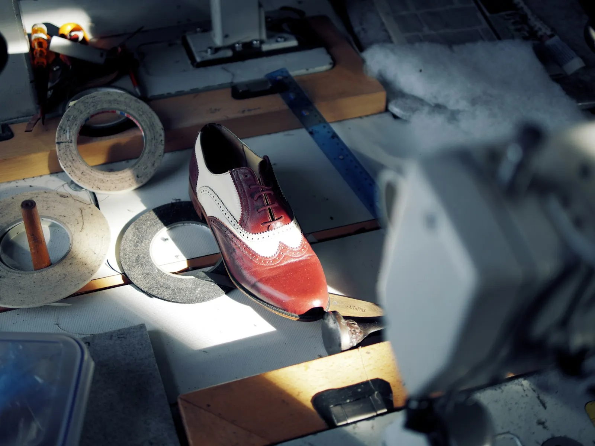
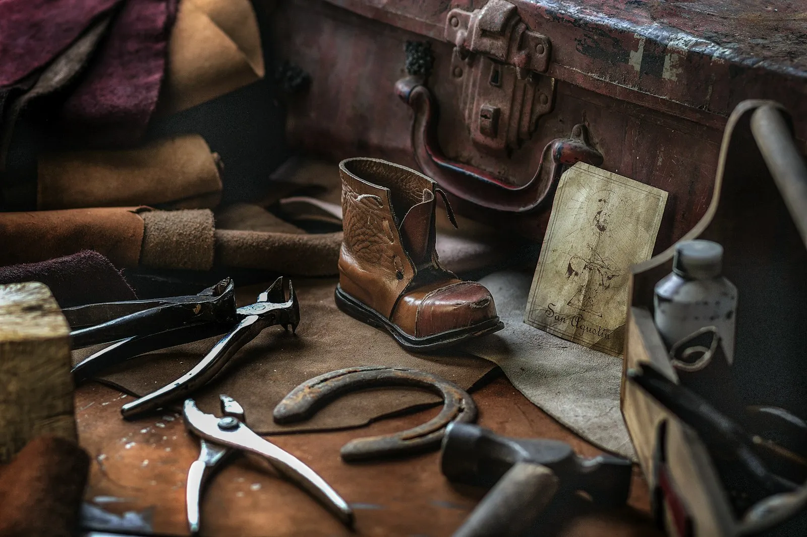
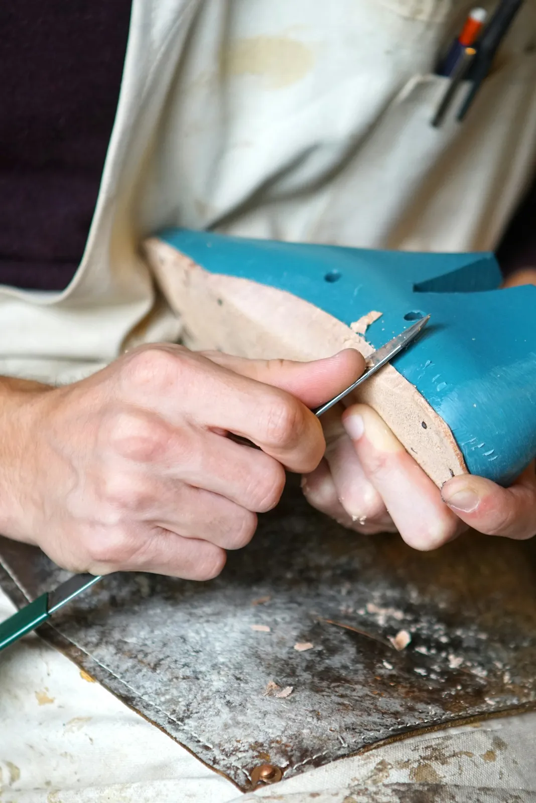
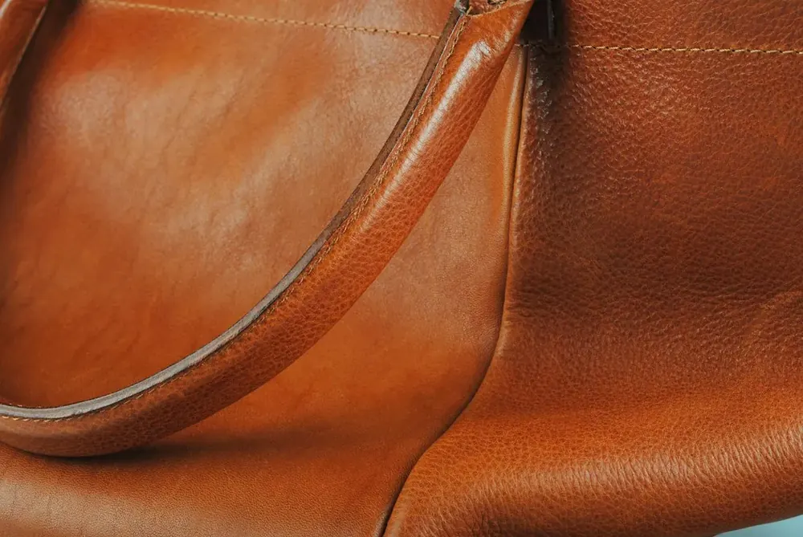
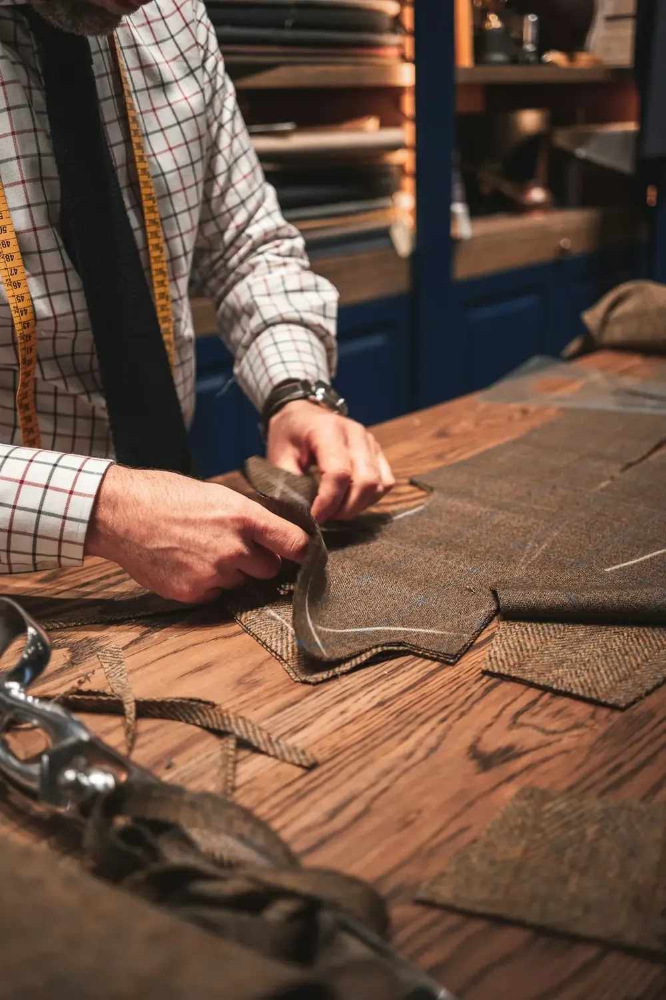
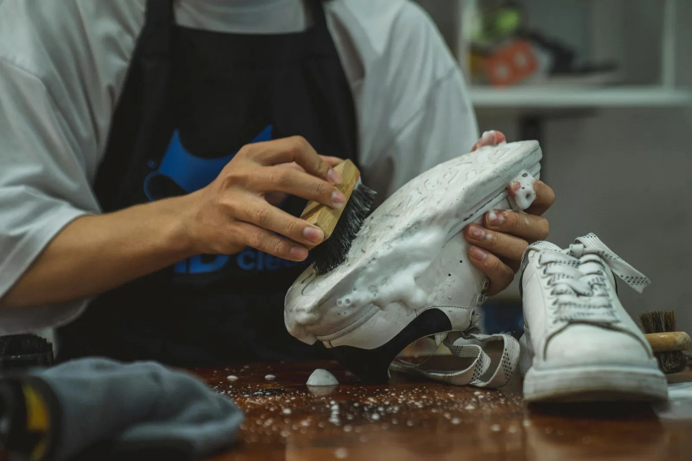
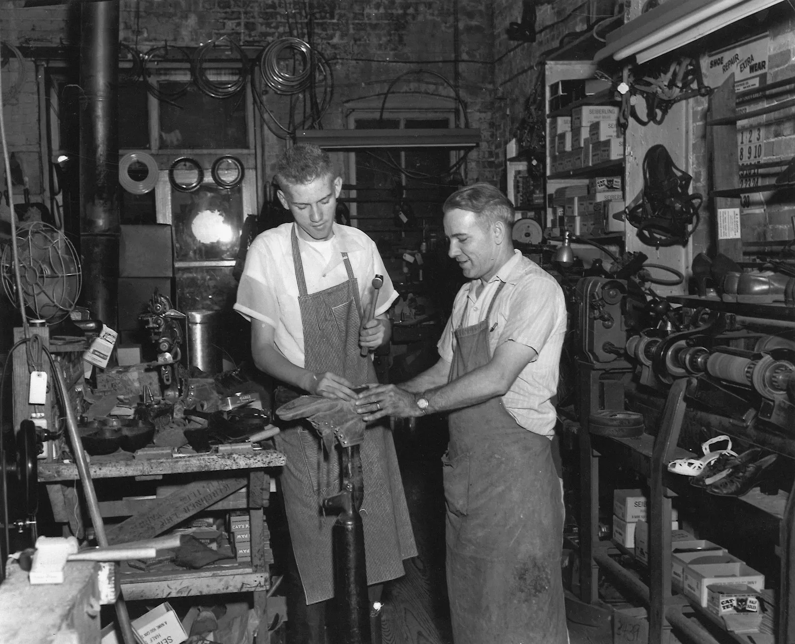
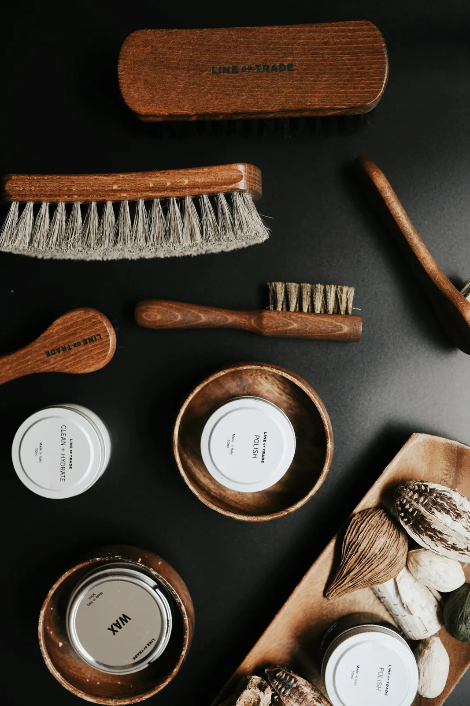
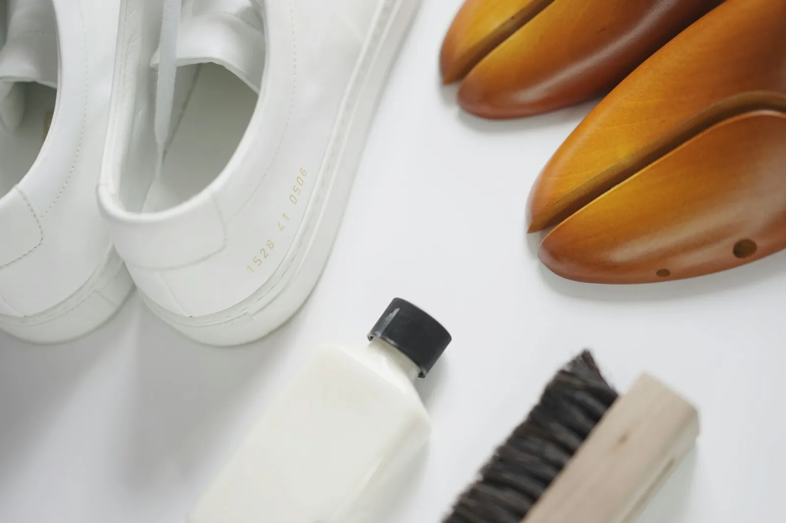
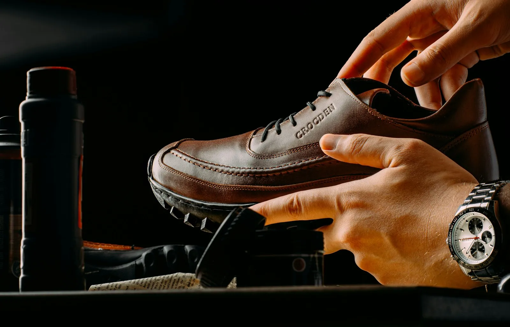

SchoenenSchoenherstel
Nieuwe zolen en hakken, loszittende zolen opnieuw verlijmd, stiksels hersteld. Ook voor sneakers en laarzen.
In de Leopoldstraat, vlak bij de winkelstraat, krijgen schoenen, riemen en handtassen een tweede leven. Een nieuwe zool, een kapotte rits, een extra gaatje in je riem. Al drie generaties, van vader op zoon.


Meestal wel. Kies wat er stuk is en wat er scheelt, dan zie je wat er in de werkplaats gebeurt. Twijfel je, breng het gewoon even binnen: advies kost niets.
Tik op het voorwerp en dan op het probleem.
De oude zool gaat eraf, er komt een nieuwe op. Je schoenen zitten daarna zoals je ze gewend bent.
Herstel van schoeisel en lederwaren, met de meeste zorg. Plus de kleine dingen waar je anders voor naar drie winkels moet.

SchoenenNieuwe zolen en hakken, loszittende zolen opnieuw verlijmd, stiksels hersteld. Ook voor sneakers en laarzen.

LederwarenHandtassen, boekentassen en riemen. Een nieuw hengsel, een gesprongen naad, een gesp die los zit.

KledingEen rits die openspringt is vaak geen nieuwe rits: een nieuw schuifje is genoeg. Dat scheelt, en je jas gaat langer mee.
 Sleutels
SleutelsHuissleutels en andere sleutels, bijgemaakt aan de toonbank in de Leopoldstraat.

OnderhoudWelk product voor welk leder, en hoe je schoenen langer mooi blijven. Advies is gratis, ook als je niets koopt.
 Levenslang
LevenslangEen riem van hier krijgt levenslange service. Een studje dat loskomt of een extra gaatje: binnenbrengen volstaat.


Wat bij de grootouders van Dries begon, staat vandaag in de Leopoldstraat, met de gevel waarop gewoon "Schoenmakerij" staat. Veel klanten komen al jaren, sommigen zelfs nadat ze naar de kust verhuisden: als ze familie bezoeken, gaan de schoenen mee.


De stad Turnhout noemde Schoenservice een voorloper in circulair ondernemen. Voor Dries is het gewoon zijn vak: zorgen dat dingen zo lang mogelijk goed blijven.
Aan de toonbank vind je wat je schoenen en lederwaren in goede staat houdt.
"Samen met onze klanten proberen we zaken zo lang mogelijk goed te houden."
Dries Lenaerts, in Turnhout voor Morgen. Veel nieuwe klanten komen via mond-tot-mondreclame, van mensen die hier al jaren hun schoenen laten maken.
| Maandag | 8.30 tot 12.30 · 13.30 tot 17 |
| Dinsdag | 8.30 tot 12.30 · 13.30 tot 17 |
| Woensdag | 8.30 tot 12.30 · 13.30 tot 17 |
| Donderdag | 8.30 tot 12.30 · 13.30 tot 17 |
| Vrijdag | 8.30 tot 12.30 · 13.30 tot 17 |
| Zaterdag | 9 tot 12 |
| Zondag | gesloten |
Geen afspraak nodig. Breng je stuk binnen, je hoort meteen wat er kan.
Nee. Kom gewoon langs tijdens de openingsuren met wat je wilt laten herstellen.
Vaak wel. Ook zolen die gelijmd zijn, kunnen dikwijls losgemaakt en opnieuw verlijmd worden.
Niet altijd. Soms volstaat een nieuw schuifje, en dat is een pak goedkoper dan een volledig nieuwe rits.
Breng hem binnen. Riemen krijgen levenslange service, ook voor een extra gaatje.
Dat hoor je eerlijk. Advies is gratis, ook als je uiteindelijk niets laat doen.
Een eerste schets, op maat van Schoenservice. Jullie kiezen de stijl, ik zorg dat alles klopt.
één keer, alles inbegrepen
Geen voorschot. Je betaalt pas als de site klaar is.
Hosting en domein op jouw naam. Een aanpassing vraag je per keer aan.
Hosting en domein inbegrepen. Nieuwe acties, verlofdagen en wijzigingen zet ik er voor je op.
mijn aanraderStijn Vranken · 0496 25 14 45 · info@digital-impression.be